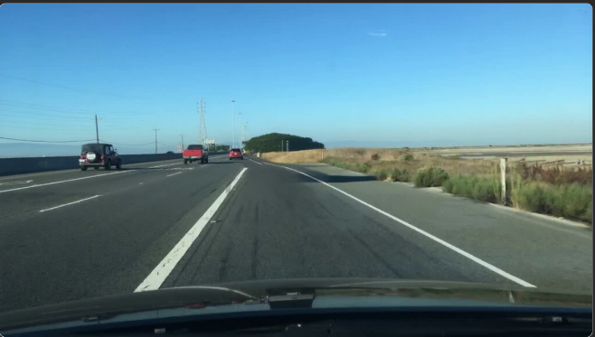
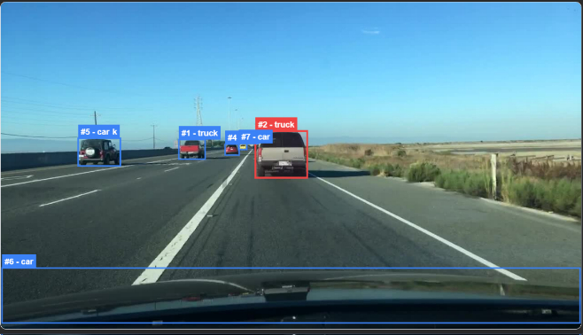

01 / SEMANTIC SEARCH
Direct
A job-search engine that reads your résumé once, ranks roles by real fit, explains the match, and writes a tailored pitch.
ReactJavaScriptSemantic AIVercel
detect(scene) .retrieve(context) .generate(solution)
an ai/ml engineer who makes ambitious systems feel useful.
computer vision · generative ai · full-stack systemsResearch-grade ideas, carried all the way into interfaces people can use.
A job-search engine that reads your résumé once, ranks roles by real fit, explains the match, and writes a tailored pitch.
A multimodule traffic-scene engine joining YOLOv8 detection, CLIP + FAISS retrieval, and diffusion-based scene editing.


Input scenePoint a camera at something broken. Resolve identifies the issue and returns clear, safety-aware repair guidance using Gemini.
I like the part where a difficult model becomes a dependable product.
My work sits between computer vision, generative AI, and the infrastructure that lets both survive contact with real users.
That means profiling the slow path, designing the API, building the UI, and caring about the weird edge case at 2 a.m.
San José State University · 2025
B.Tech Information TechnologyMRCET · 2023
Building a high-speed vision + diffusion pipeline with adaptive tuning, caching, and a FastAPI/React interface.
Productionized NLP and RAG systems, MLflow experiments, and FastAPI services across more than one million indexed records.
Automated cloud deployments and improved cost, reliability, and delivery speed across AWS applications.
I’m open to AI/ML engineering roles, ambitious products, and genuinely interesting problems.
✉ aravindg@duck.com